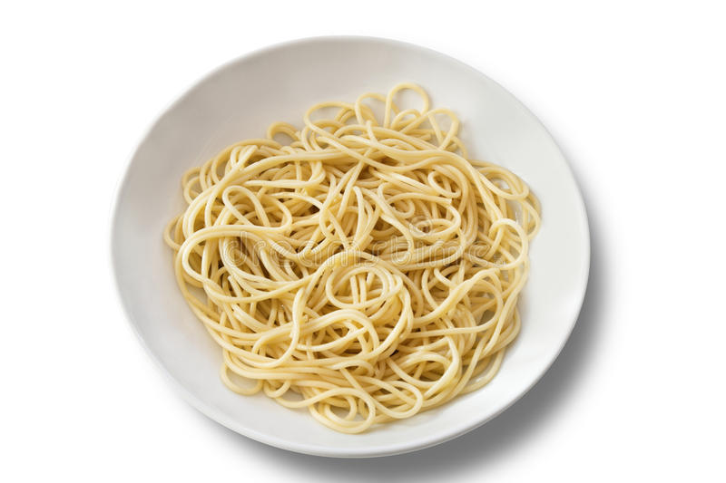

How to make: Plain Spaghetti

Our spaghetti recipe features noodles cooked to perfection
with a culinary technique that has been fine-tuned over
generations, resulting in a dish that is both simple and
sublime.
Ingredients:
- Dry Spaghetti Noodles
- Salt
- Water
Steps:
- Fill a large pot with water, add 2 tablespoons of salt and mix
- Place water on stove at high heat, leave until at a rolling boil
- Put the spaghetti noodles in the water
- When the noodles have softened to the perfect al dente texture, drain them using a colander
- Put the drained noodles on one of those pasta plates
- Enjoy!